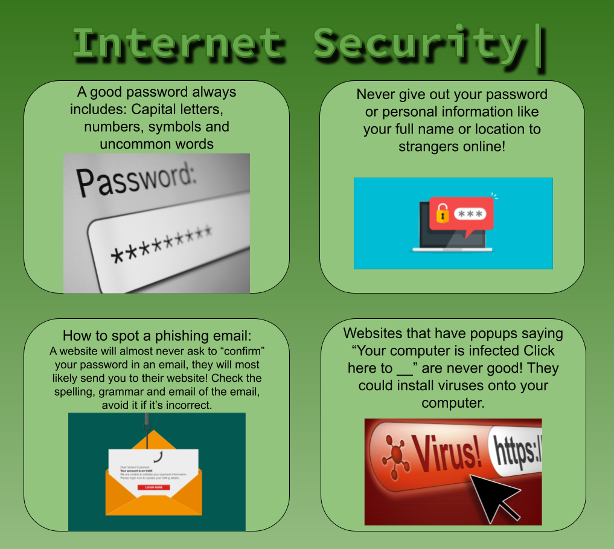

Due Date: Mar 30, 2022 | Submitted: Mar 29, 2022 | Grade: 100%
At the beginning of first trimester we had a short unit on digital citizenship and had to design an infographic about one of the topics we learnt. I chose security because it was easy. I made four boxes, one about how to make a sercure password and the three others on how to stop phishing websites and emails.
